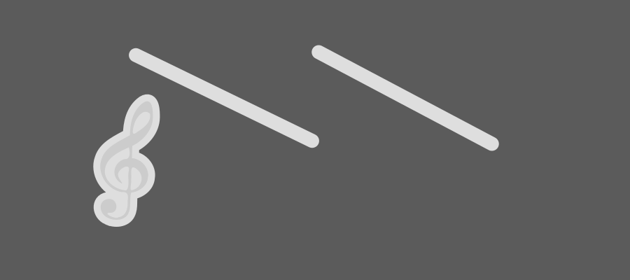

Kursblogg
Video-taggen
Testar att envända video-taggen genom att visa en trailer från Big Buck Bunny
Skrivet av Rasmus, 2013-09-15
Laborationssidan, svg
En SVG bild som skapades till uppgiften 1.6
Skrivet av Rasmus, 2013-09-15
Hejsan världen!
På denna blogg kommer jag att skriva några rader om de laborationer jag gör och också publicera material som jag producerar.
Skrivet av Rasmus, 2013-09-09